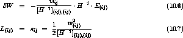
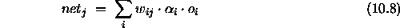
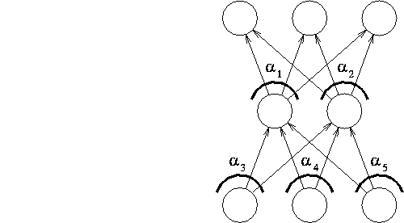

Skeletonization ([MM89]) prunes units by estimating the change of the error function when the unit is removed (like OBS and OBD do for links). For each node, the attentional strength is introduced which leads to a different formula for the net input:
Figure  illustrates the use of the attentional strength.
illustrates the use of the attentional strength.

Defining the relevance of a unit as the change in the error function while removing the unit we get

In order to compute the saliency, the linear error function is used:
